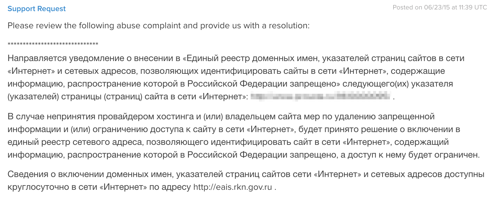
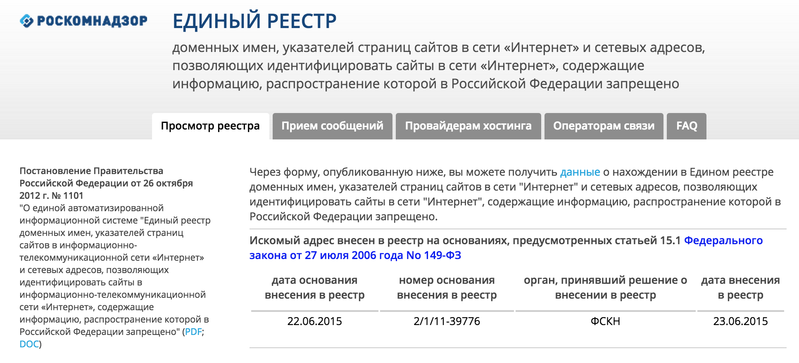
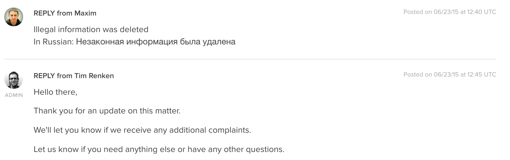

Единый реестр сайтов, содержащих информацию, распространение которой в Российской Федерации запрещено, или, как его ещё называют, список запрещённых сайтов Роскомнадзора, функционирует уже третий год. Не будем сейчас обсуждать целесообразность ведения такого списка. Стоит принять, что он есть и вряд ли уже исчезнет.
Регулирует данный реестр Постановление Правительства Российской Федерации от 26 октября 2012 г. № 1101. Решение о включении сайтов в список запрещённых принимают несколько ведомств: Федеральная служба Российской Федерации по контролю за оборотом наркотиков, Федеральная служба по надзору в сфере защиты прав потребителей и благополучия человека и Федеральная служба по надзору в сфере связи, информационных технологий и массовых коммуникаций.
Каждое ведомство имеет для включения сайта в список запрещённых свои основания. Это информация о способах приготовления наркотиков, местах их продажи, призывы к их употреблению, способы совершения самоубийств и призывы к ним, порнографические изображения с участием несовершеннолетних.
Проверить сайт на наличие в списке запрещённых можно на сайте реестра eais.rkn.gov.ru
В общем виде порядок внесения сайтов в единый реестр выглядит так:
1. Оператор реестра получает в электронном виде решение уполномоченного органа о признании информации запрещенной информацией.
2. В течение суток оператор вносит доменное имя и (или) указатель страницы сайта, содержащего запрещенную информацию в реестр
3. Одновременно с включением в единый реестр информации уполномоченный сотрудник Федеральной службы по надзору в сфере связи, информационных технологий и массовых коммуникаций и (или) оператора реестра определяет провайдера хостинга и направляет ему в электронном виде уведомление на русском и английском языках о включении в реестр запрещённых сайтов
4. На принятие мер у провайдера хостинга и владельца сайта есть 3 дня.
5. В случае, если через три дня доступ к запрещённой информации по-прежнему есть, в единый реестр включается IP-адрес сервера, на котором размещён сайт.
6. В 9 и 21 час по московскому времени реестр обновляется и операторы связи обязаны получить эти обновления
7. В течение суток операторы связи блокируют доступ к сайтам, находящимся в реестре.
Что делать, чтобы удалить свой сайт из реестра запрещённых сайтов
Нужно понимать, что нахождение сайта в списке, в случае, если ваша аудитория находится в России, фактически ставит точку в его существовании. Если в реестр внесён IP-адрес, то под ударом находятся и другие сайты расположенные на том же сервере. В случае виртуального хостинга вы можете оказаться заблокированным, даже, если выкладываете котёнка в личный блог. Обойти блокировку, в теории, можно, с помощью бубнов, но никто из ваших пользователей не будет этого делать.
Контент на многих сайтах остаётся немодерируемым. Эти многие сайты находятся, таким образом, под потенциальной угрозой блокировки. У меня тоже есть несколько таких сайтов, поэтому ничего удивительного, что 23 июня я получил письмо от хостера следующего содержания:
Oh no! We've found an issue with your account and issued you a new ticket that needs to be addressed as soon as possible.

Я прошёл по указанному в письме адресу и увидел, что в комментариях к одной из страниц содержалась реклама наркотиков. Проверил похожие комментарии в базе данных и нашёл ещё с десяток похожих. Комментарии были размещены 15 июня. То есть от размещения до блокировки страницы Роскомнадзором прошла всего неделя.

Разумеется информация была удалена. Кроме этого, не дожидаясь других уроков, была проведена работа и с остальными сайтами. На одних я сделал комментарии модерируемыми, на других полностью убрал такую возможность, на третьих закрыл регистрацию новых пользователей.
Хостеру я ответил в тикете

Но отсутствие обратной связи от оператора реестра не давало расслабиться. Я почитал в интернете информацию о работе Роскомнадзора, писали в основном не очень хорошее. Что Роскомнадзор не отвечает на письма, что удаление из реестра длится месяцы.
Для страховки решил всё-таки написать письмо на адрес zapret-info@rsoc.ru.
Здравствуйте, Страница моего сайта http://(_адрес сайта_) была внесена в реестр запрещенных сайтов. Сообщаю Вам, что я устранил причину внесения сайта в реестр и прошу Вас удалить страницу http://(_адрес сайта_) из данного реестра. С уважением, Шипачев Максим Александрович
Ответ пришёл через три часа
Здравствуйте, Ваше обращение рассмотрено, данные приняты к учету. Спасибо за сотрудничество. Консультант горячей линии по вопросам реализации статей 15.1-15.3 Федерального закона "Об информации, информационных технологиях и о защите информации"
По состоянию на сегодняшний день «Искомый адрес не значится в реестре по основаниям, предусмотренным статьей 15.1 Федерального закона от 27 июля 2006 года No 149-ФЗ»